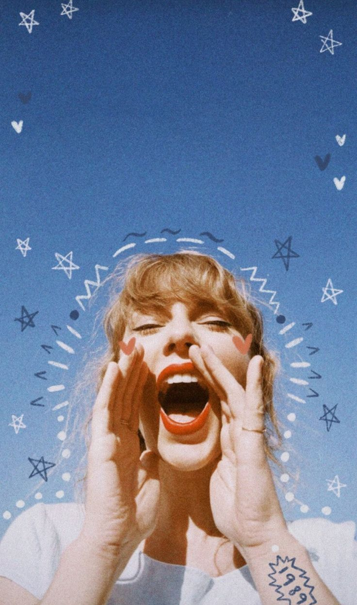

Historia

Taylor Alison Swift, nacida el 13 de diciembre de 1989 en Reading, Pennsylvania, es una destacada cantante, compositora y actriz estadounidense. Desde una edad temprana, mostró un talento excepcional para la música, aprendiendo a tocar la guitarra a los 12 años y componiendo sus propias canciones. Su debut en la industria musical country con el álbum homónimo "Taylor Swift" (2006) la catapultó a la fama con éxitos como "Tim McGraw" y "Teardrops on My Guitar". Continuó su ascenso con "Fearless" (2008), ganando múltiples premios Grammy y consolidando su reputación como una figura destacada del country pop. A lo largo de su carrera, Swift ha evolucionado constantemente, explorando diferentes estilos musicales y desafiando las convenciones del pop con álbumes como "1989" (2014), que marcó un cambio hacia un sonido más pop con éxitos como "Shake It Off" y "Blank Space". Además de su éxito en la música, Swift ha utilizado su influencia para abogar por causas importantes como los derechos de los artistas y el empoderamiento de las mujeres. Su impacto cultural y su compromiso con la justicia social han sido ampliamente reconocidos.
¿ Que son las Taylor's version ?
Las "Taylor's Versions" son regrabaciones de los álbumes de Taylor Swift, originalmente lanzados bajo su antigua discográfica, Big Machine Label Group. Taylor decidió regrabar estos álbumes después de que los derechos de sus grabaciones maestras fueran adquiridos por Scooter Braun en 2019, lo que generó controversia y desacuerdos sobre la propiedad de su música. Estas nuevas versiones, comenzando con "Fearless (Taylor's Version)" en 2021, permiten a Taylor Swift recuperar el control creativo y económico sobre su catálogo musical, mientras ofrece a los fans una experiencia renovada de sus amados álbumes originales.
En cuanto a su música más reciente, Swift lanzó el álbum "Midnights", que ha sido aclamado tanto por críticos como por fans. Este álbum marca un retorno a su sonido pop característico, pero con una madurez y sofisticación lírica que refleja su crecimiento personal y artístico. Canciones como "Lavender Haze" y "Anti-Hero" han destacado por sus melodías pegajosas y profundas letras introspectivas. Swift ha continuado sorprendiéndonos con colaboraciones inesperadas y una producción impecable, consolidando su lugar como una de las mejores compositoras de su generación. Actualmente, Taylor Swift está llevando a cabo su muy esperado "The Eras Tour". Este tour es una celebración de su extensa carrera, con un repertorio que abarca todas sus etapas musicales, desde sus comienzos en el country hasta sus éxitos más recientes. Los conciertos han sido descritos como espectáculos impresionantes, con elaboradas producciones escénicas y emotivas interpretaciones en vivo que han dejado a los fans maravillados. "The Eras Tour" no solo es un testimonio del talento y la versatilidad de Swift, sino también de su inquebrantable conexión con su audiencia global.
